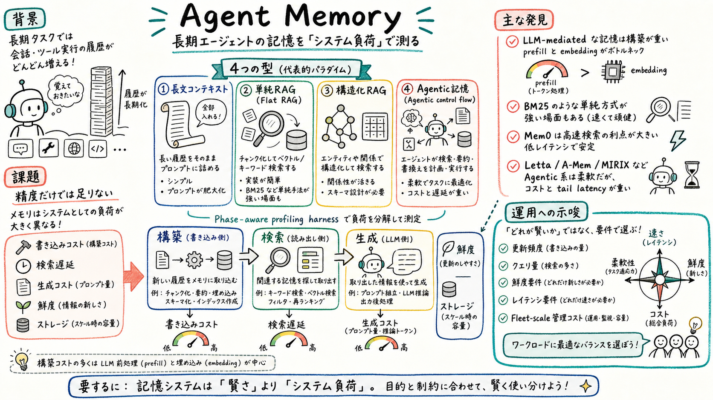

第一の貢献は、agent memory system を construction、storage、retrieval、mutability の観点で分類する taxonomy である。代表的な10システムを、長文コンテキスト、Flat RAG、構造化 RAG、Agentic control flow に整理している。

どんな論文か
この論文は、長期タスクをこなす LLM エージェントの memory system を、accuracy benchmark だけでなくシステム負荷として測る。対象は、会話履歴や tool trace を保存し、後続セッションで検索し、必要なら更新する agent memory である。
著者らは、agent memory を4つのパラダイムに分類する。長文コンテキスト、Flat RAG、構造化 RAG、Agentic control flow である。それぞれ、書き込み側の構築処理、保存構造、検索方法、更新可能性が異なる。
論文の強い点は、memory をただの検索精度の問題にしないところにある。construction、retrieval、prompt assembly、generation、maintenance に分け、どこで token、embedding、GPU energy、latency が発生するかを測っている。
結論はかなり実務寄りだ。高機能な agentic memory は柔軟だが、構築コストや tail latency が重い。逆に BM25 のような単純な方式が、 recall-heavy な workload では強いこともある。したがって memory system は、更新頻度、クエリ量、鮮度要件、許容遅延、fleet-scale の管理コストで選ぶ必要がある。
Agent Memory は、エージェント自身の interaction stream から作られる可変の外部状態を扱う。通常の RAG が静的な文書集合を検索するのに対し、agent memory はユーザーとの会話、tool output、環境からの feedback を継続的に保存・検索・更新する。
この論文は、agent memory の精度そのものを競うより、memory system が実運用でどんな負荷を生むかを調べる。長期エージェントを scale させるには、memory をモデルの外側にある状態管理基盤として見る必要がある、という立場で読むとよい。
課題と貢献
memory construction、retrieval、generation にかかる token、model call、GPU utilization、latency を分解して測る。
第三の貢献は、LongMemEval と MemoryAgentBench を使った system characterization である。construction cost、construction LLM の capability floor、query volume による amortization、freshness-latency tradeoff、storage growth、tail latency を横断して見ている。
手法のしくみ
1
論文は agent memory の実行を、ingestion、memory construction、storage、retrieval、prompt assembly、generation、maintenance に分ける。この分解により、精度だけでは見えない write path と read path の違いが見える。
2
比較対象には BM25、EmbedRAG、GraphRAG、HippoRAG v2、Mem0、SimpleMem、A-Mem、Letta、MIRIX、long-context baseline などが含まれる。単純な検索から、LLM が記憶の書き込みや検索を制御する agentic system までを同じ測定枠に置く。
3
評価では、construction を終えてから query する batch regime だけでなく、セッションが連続して届き、前の session の write が次の query に効く freshness-latency regime も見る。これにより、非同期に構築して latency を隠すと記憶が古くなる、という運用上の問題が浮かび上がる。
検証結果
長期 workload では full-history prefill が重く、agent memory は per-query serving latency を大きく下げる。ただし memory system 間にも2桁規模の latency 差があり、accuracy だけでは選べない。
LLM-mediated な memory system では、construction energy が lifecycle の大部分を占める。論文では、300 query の QA phase よりも construction が支配的になるケースが多く、energy per correct answer でも大きな差が出ると報告している。
construction は embedding と prefill に強く支配される。これは、通常の latency-sensitive QA traffic と同じ serving stack に載せると干渉しやすいことを意味する。
MemoryAgentBench では、BM25 が aggregate で高い accuracy と軽い construction を示す一方、paraphrase、multi-hop、temporal inference のような難しい条件では構造化・agentic memory の意義が出る。単一の最良システムはなく、construction cost、per-query latency、accuracy の frontier 上で選ぶ必要がある。
限界と読みどころ
評価は代表的な10システムと2つの benchmark suite に基づくため、すべての memory workload を代表するわけではない。特に multimodal memory や multi-agent / distributed memory の一貫性問題は今後の課題として残っている。
また、BM25 が強く見える結果は、MemoryAgentBench の aggregate が exact-match retrieval を報いる構成を含むためでもある。すべての実務 memory で BM25 が十分という意味ではない。
それでも、この論文は agent memory を選ぶ時の問いを変える。どれが一番賢いかではなく、この workload ではどの phase にコストを寄せるべきか、どの freshness と latency を許すかを考えるための土台になる。
読みながら見る図表や節
- Figure 1 は、agent memory を write path と read path を持つ二層の記憶として見る入口になる。外部に保存された long-term memory から必要なものを working memory へ戻す、という見方が重要。
- Table 1 は、10システムを construction、storage、retrieval、mutability で並べる taxonomy の中心。memory system の名前ではなく、どの型に属するかを見ると運用負荷を予測しやすい。
- Figure 3 と Figure 4 は、construction が lifecycle cost を支配することを示す。query time だけ見ていると安く見える system でも、構築に大きな energy と時間を払っていることが分かる。
- Figure 7 と Figure 8 は、construction、serve latency、accuracy、freshness の間に単純な勝者がないことを示す。実運用では query arrival pattern と update pattern を先に決める必要がある。
次に読むなら
- 次に読むなら、Is Agent Memory a Database? と VikingMem をつなげるとよい。この論文が system cost の地図を出し、前者が agent memory を data foundation として、後者が memory base として扱う。
- おい丸の運用に引きつけるなら、brain / wiki / state / audit log / skill を単に保存場所としてではなく、construction cost、retrieval latency、freshness、maintenance policy を持つ memory system として棚卸しできる。
読後Q&A
この論文の中心問いは？
長期エージェントの memory system は、精度だけでなくどんな construction cost、retrieval latency、generation cost、storage footprint、freshness tradeoff を持つのか、という問い。
普通の RAG と何が違う？
普通の RAG は静的な文書集合を検索することが多い。一方 agent memory は、エージェント自身の会話や tool trace から作られる可変の状態で、保存・検索・更新・忘却まで含む。
なぜ accuracy だけではだめ？
同じくらいの accuracy でも、構築に何時間もかかる system と、ほぼ即座に index できる system がある。query latency や energy、storage、tail latency も大きく違うため。
一番よい memory system は何？
論文の結論は、単一の勝者はないというもの。更新が少なく query が多い workload なら構築に寄せる方式が合い、継続的に ingestion され query が sparse なら軽い構築の方式が合う。
BM25 が強いなら、それでいい？
recall-heavy な aggregate では BM25 が強く見える。ただし paraphrase、multi-hop、temporal inference では弱点があり、構造化・agentic memory の価値が出る場面もある。
運用で一番見落としやすい点は？
construction cost。query time が速くても、記憶を作る write path が重いと、energy、GPU utilization、freshness、tail latency に効いてくる。
おい丸の運用にどう効く？
brain、wiki、state、audit log、skills を、単なる保存先ではなく memory system として見直せる。どこで構築し、どこで検索し、どこで古くなり、どのコストを払っているかを分けて考えられる。
次に読むなら？
Is Agent Memory a Database?、VikingMem、Mem0、Letta / MemGPT 系の論文と合わせると、memory を保存箱ではなく運用基盤として見る線が太くなる。